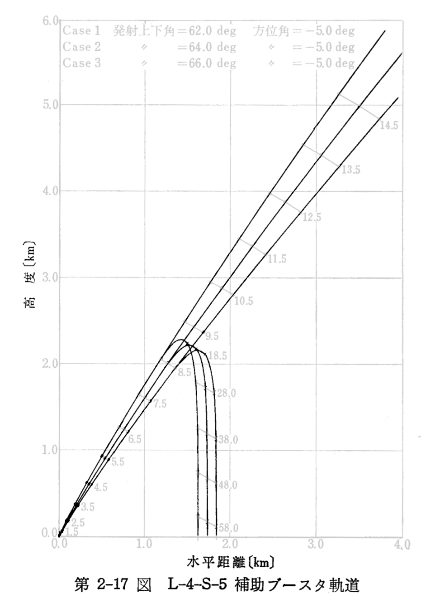

Digitized Data From Historical Sources
Most of the primary sources are from the 1960’s. They contain some really interesting charts, but not the raw data. WebPlotDigitizer was used to extract approximate values as CSV files.
Table of Contents:
- Modeled L-4S-5 Trajectory, 3 Cases: First Stage and Booster
- First Stage Thrust Curve (735-3/3)
- First Stage and Booster Thrust Curve (L-4S-2)
- Second Stage Thrust Curve (735-1/3)
- Modeled L-4S-5 Trajectory, First 3 Stages Key Figures
Modeled L-4S-5 Trajectory, 3 Cases: First Stage and Booster
The L-4S trajectory was optimized by simulating several cases of launch rail angle and azimuth.
Here the results of 3 primary cases, representing the nominal range of likely flights is shown for the booster and first part of stage 1. I’ve emphasized the paths to help WebPlotDigitizer pull out the data a little more cleanly.

Figure 2-17, “L-4T-1, L-4S-4, L-4S-5 Specifications and Flight Plan” (pg. 451).
Rendered to:
- traj_model_case_1_booster.csv
- traj_model_case_2_booster.csv
- traj_model_case_3_booster.csv
- traj_model_case_1_stage1.csv
- traj_model_case_2_stage1.csv
- traj_model_case_3_stage1.csv
Format:
| Column | Value | Units |
|---|---|---|
| 1 | Downrange | km |
| 2 | Altitude | km |
First Stage Thrust Curve (735-3/3)
The first stage is called a 735 (735 mm diameter) 3/3 (full size) motor. It’s an polyurethane + ammonium perchlorate composite motor.
Figure 2-1, “L-Engine Static Fire Tests” (pg. 626).
Rendered to:
With units converted to Newtons.
Format:
| Column | Value | Units |
|---|---|---|
| 1 | Time | s |
| 2 | Sea-level Thrust | N |
First Stage and Booster Thrust Curve (L-4S-2)
At the moment I can only find a thrust curve from the earlier L-4S-2. It should be largely identical to vehicle 5.
Figure 2-a, “L4S-2 Flight Plan” (pg. 679).
Rendered to:
Format:
| Column | Value | Units |
|---|---|---|
| 1 | Time | s |
| 2 | Sea-level Thrust | kg |
Second Stage Thrust Curve (735-1/3)
The Second stage is a one third scaled first stage (735 1/3) motor. It’s an polyurethane + ammonium perchlorate composite motor.
This reference had two thrust curves from different test articles. 735 1/3–2 seems closer to the flight version of the motor, but the burn time is too short.
Figure 3-2, “L-Engine Static Fire Tests” (pg. 628).
Rendered to:
With units converted to Newtons.
Format:
| Column | Value | Units |
|---|---|---|
| 1 | Time | s |
| 2 | Sea-level Thrust | N |
Modeled L-4S-5 Trajectory, First 3 Stages Key Figures
Cleaned up a bit from the original for easier digitization.
Figure 2-2, “L-4T-1, L-4S-4, L-4S-5 Specifications and Flight Plan” (pg. 443).
There are some key numbers highlighted in this chart:
| Figure | Value | Units |
|---|---|---|
| Maximum Acceleration (Boost off rail) | 70.3 | m/s/s |
| Maximum Dynamic Pressure (MaxQ) | 2.44 | kg/cm² |
| Maximum Velocity (First Stage) | 1.033 | km/s |
| Minimum Acceleration (Drag induced, First Stage) | -14.4 | m/s/s |
| Maximum Acceleration (Second Stage) | 79.9 | m/s/s |
| Maximum Velocity (Second Stage) | 2.592 | km/s |
| Minimum Acceleration (Second Stage) | -4.58 | m/s/s |
| Maximum Acceleration (Third Stage) | 114.8 | m/s/s |
| Maximum Velocity (Third Stage) | 4.621 | km/s |
Acceleration rendered to:
Format:
| Column | Value | Units |
|---|---|---|
| 1 | Time | s |
| 2 | Accelearation | m/s/s |
Velocity rendered to:
Format:
| Column | Value | Units |
|---|---|---|
| 1 | Time | s |
| 2 | Velocity | km/s |
Dynamic Pressure rendered to:
Format:
| Column | Value | Units |
|---|---|---|
| 1 | Time | s |
| 2 | Dynamic Pressure | kg/cm² |
Altitude rendered to:
Format:
| Column | Value | Units |
|---|---|---|
| 1 | Time | s |
| 2 | Altitude | km |